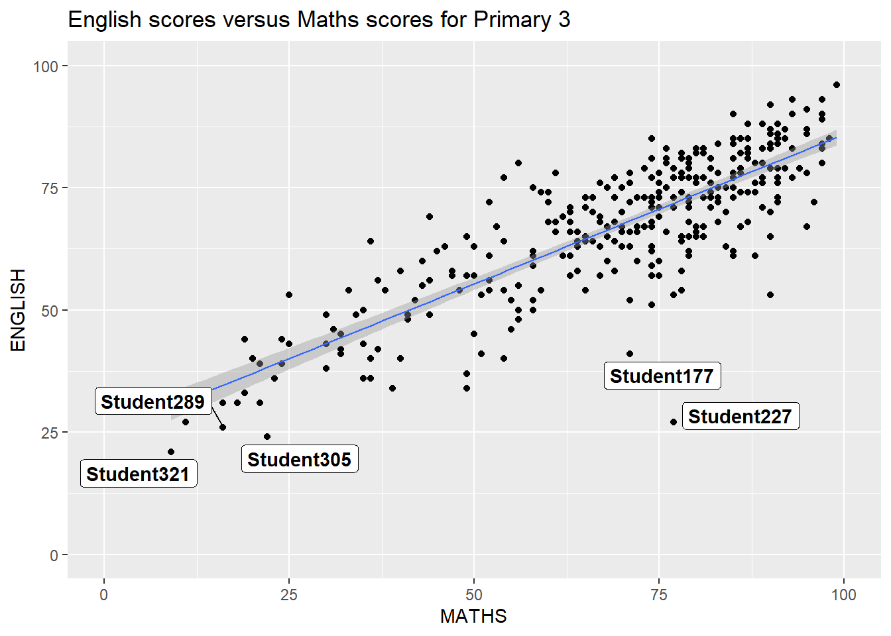
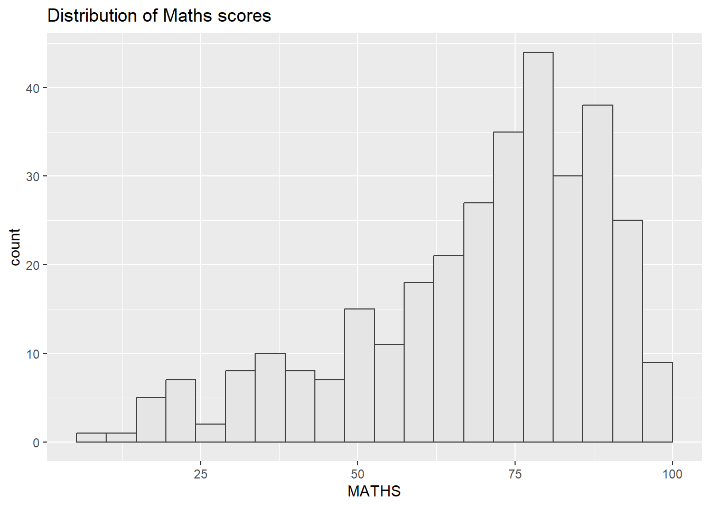
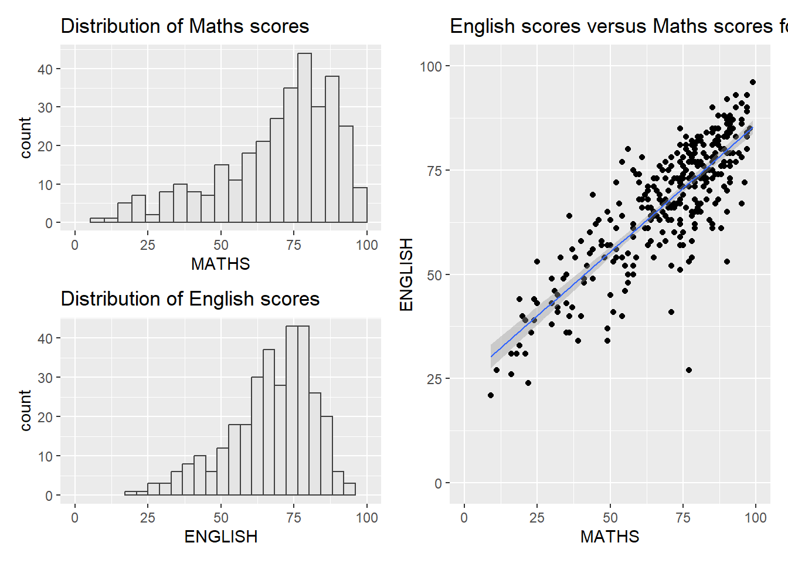
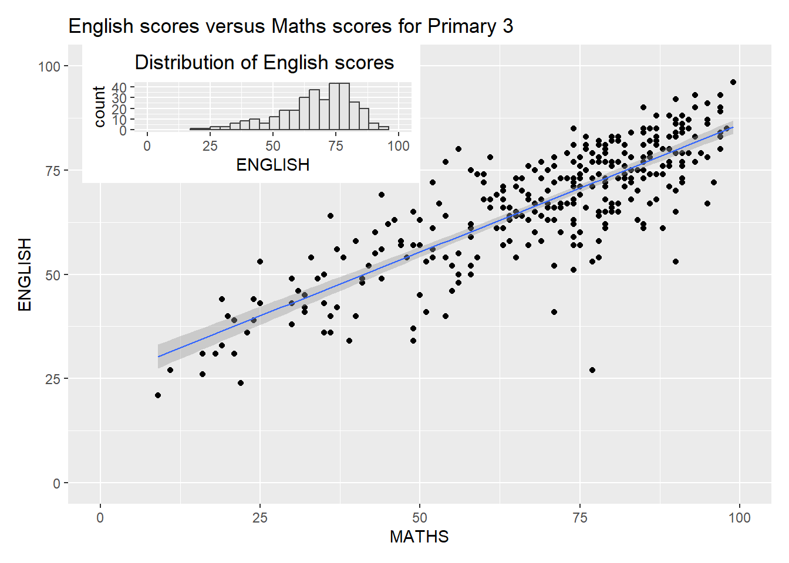

pacman::p_load(ggrepel, patchwork,
ggthemes, hrbrthemes,
tidyverse) Hands-On Exercise 2
This exercise builds on what was covered in Hands-On Exercise 1, where we explore more extensions of ggplot2 extensions that will allow the creation of a more elegant and effective statistical graphics.
In this exercise, 4 R packages will be used:
ggrepel: provides geoms for ggplot 2 to repel overlapping text labels.ggthemes: provides additional themes, geoms, and scales for ggplot2.hrbrthemes: provides typography-centric themes and theme components for ggplot2.patchwork: prepares composite figures using ggplot 2.
The code block belows checks that the above packages are installed and loaded into the R working environment.
The next code block imports the CSV file:
exam_data <- read_csv("../data/Exam_data.csv")Rows: 322 Columns: 7
── Column specification ────────────────────────────────────────────────────────
Delimiter: ","
chr (4): ID, CLASS, GENDER, RACE
dbl (3): ENGLISH, MATHS, SCIENCE
ℹ Use `spec()` to retrieve the full column specification for this data.
ℹ Specify the column types or set `show_col_types = FALSE` to quiet this message.ggrepel()
With a large number of data points, one key challenge while plotting the statistical graphs is annotation.
ggplot(data=exam_data,
aes(x= MATHS,
y=ENGLISH)) +
geom_point() +
geom_smooth(method=lm,
size=0.5) +
geom_label(aes(label = ID),
hjust = .5,
vjust = -.5) +
coord_cartesian(xlim=c(0,100),
ylim=c(0,100)) +
ggtitle("English scores versus Maths scores for Primary 3")
What ggrepel does is that it repels overlapping text as shown above.
This will be done by replacing:
geom_text()withgeom_text_repel()geom_label()withgeom_label_repel()
How does ggrepel work?
The code block below shows the implementation of ggrepel based on the scatter plot that was done above.
ggplot(data=exam_data,
aes(x= MATHS,
y=ENGLISH)) +
geom_point() +
geom_smooth(method=lm,
size=0.5) +
geom_label_repel(aes(label = ID),
fontface = "bold") +
coord_cartesian(xlim=c(0,100),
ylim=c(0,100)) +
ggtitle("English scores versus Maths scores for Primary 3")`geom_smooth()` using formula = 'y ~ x'
ggthemes
By default, ggplot2 have 8 built-in themes:
theme_gray()theme_bw()theme_classic()theme_dark()theme_light()theme_linedraw()theme_minimal()theme_void()
ggplot(data=exam_data,
aes(x = MATHS)) +
geom_histogram(bins=20,
boundary = 100,
color="grey25",
fill="grey90") +
theme_gray() +
ggtitle("Distribution of Maths scores") 
How would ggtheme package work?
With the above example given, let’s explore the package. This pacakage provides themes that would replicate looks of plot by Edward Tufte, Stephen Few, Fivethirtyeight, The Economist, ‘Stata’, ‘Excel’, and The Wall Street Journal, among others.
The following code example below follows the Economist theme is used.
ggplot(data=exam_data,
aes(x = MATHS)) +
geom_histogram(bins=20,
boundary = 100,
color="grey25",
fill="grey90") +
ggtitle("Distribution of Maths scores") +
theme_economist()
hrbthemes
This package provides a base theme that focuses on the typographic elements, including where various labels are placed as well as the fonts that are used.
To showcase the use of the package, the following code block is initially run as an example:
ggplot(data=exam_data,
aes(x = MATHS)) +
geom_histogram(bins=20,
boundary = 100,
color="grey25",
fill="grey90") +
ggtitle("Distribution of Maths scores") +
theme_ipsum()
How does hrbthemes work?
Using the example given above, the code block below does 3 changes:
axis_title_sizeargument is used to increase the font size to 18base_sizeargument is used to increase the default axis label to 15gridargument is used to remove the x-axis grid lines
ggplot(data=exam_data,
aes(x = MATHS)) +
geom_histogram(bins=20,
boundary = 100,
color="grey25",
fill="grey90") +
ggtitle("Distribution of Maths scores") +
theme_ipsum(axis_title_size = 18,
base_size = 15,
grid = "Y")How do I showcase multiple graphs?
One graph is not enough to showcase the full visualisation, but rather multiple graphs together creates a more compelling story to share. ggplot2 have several extensions that provides functions that compose figures with multiple graphs.
To showcase this functions, 3 statistical graphs are created with the following code blocks below:
The 1st graph:
p1 <- ggplot(data=exam_data,
aes(x = MATHS)) +
geom_histogram(bins=20,
boundary = 100,
color="grey25",
fill="grey90") +
coord_cartesian(xlim=c(0,100)) +
ggtitle("Distribution of Maths scores")The 2nd graph:
p2 <- ggplot(data=exam_data,
aes(x = ENGLISH)) +
geom_histogram(bins=20,
boundary = 100,
color="grey25",
fill="grey90") +
coord_cartesian(xlim=c(0,100)) +
ggtitle("Distribution of English scores")The 3rd graph:
p3 <- ggplot(data=exam_data,
aes(x= MATHS,
y=ENGLISH)) +
geom_point() +
geom_smooth(method=lm,
size=0.5) +
coord_cartesian(xlim=c(0,100),
ylim=c(0,100)) +
ggtitle("English scores versus Maths scores for Primary 3")Using the patchwork extension to create composite graphics
This extension is one of the ggplot2 extensions which is designed to combine separate ggplot2 graphs into single figure.
The general syntax that combines graphs are as follows:
- 2-column layout using the
+sign ()to create a subplot group- 2-row layout using the
/sign
2 graphs combined
The code block below shows how 2 histograms are combined
p1 + p2
3 graphs combined
The code block below does the following to combine 3 plots:
/stacks 2ggplot2graphs|places the plots beside each other()defines the sequence of the plotting
(p1 / p2) | p3`geom_smooth()` using formula = 'y ~ x'
Creating the composite figure with tags
The package also provides auto-tagging capabilities to identify the subplots in the figure with plot_annotation().
((p1 / p2) | p3) +
plot_annotation(tag_levels = 'I')`geom_smooth()` using formula = 'y ~ x'
Creating the composite figure with insert
The package also allows plots to be placed freely on top/below another plot with inset_element().
p3 + inset_element(p2,
left = 0.02,
bottom = 0.7,
right = 0.5,
top = 1)`geom_smooth()` using formula = 'y ~ x'
Combining both patchwork and ggtheme while creating a composite figure
The code block showcases how both ggtheme and patchwork can be combined.
patchwork <- (p1 / p2) | p3
patchwork & theme_economist()`geom_smooth()` using formula = 'y ~ x'